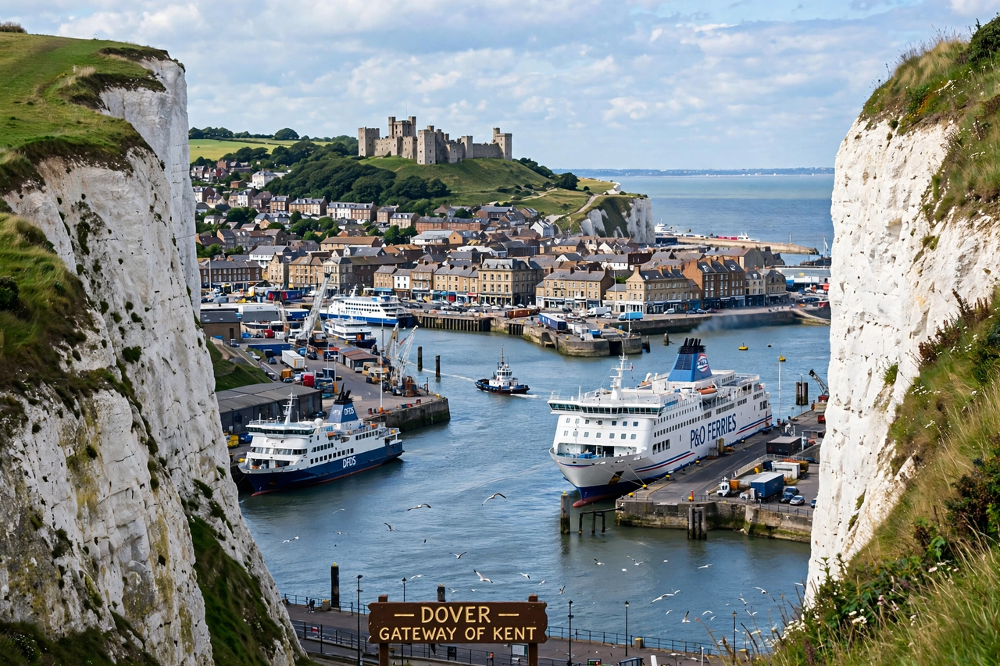

Kent
From Wikipedia, the free encyclopedia

Kent is a ceremonial county in South East England, bordered by Greater London, Surrey, East Sussex, the Thames Estuary and the Strait of Dover. Known as the 'Garden of England' for its orchards and hop gardens, it is the historic gateway to Britain — Dover and Folkestone face France 21 miles away — and includes the cathedral city of Canterbury, seat of the Archbishop of Canterbury. Population about 1.9 million (including Medway).
History
Kent was among the first Anglo-Saxon kingdoms (its kings claimed descent from Hengist), and Augustine landed here in 597 to begin England's conversion. Jutish settlement gave it distinctive customs (gavelkind inheritance). Its coasts faced every invasion and fleet — Cinque Ports, the Armada, the Battle of Britain fought in its skies (1940), the Channel crossings of every era — while its interior stayed agrarian: hops, cherries, cobnuts and oast houses.
Modern Kent
The Channel Tunnel (1994) and HS1 made Kent a commuter-and-logistics corridor (Ashford, Ebbsfleet); Dover's ferry port remains Britain's busiest with Europe, making the county the front line of Brexit-era trade friction and small-boat migration politics. Canterbury, Rochester, Tunbridge Wells and the Kent Downs (an Area of Outstanding Natural Beauty) balance the corridor economy with heritage tourism.